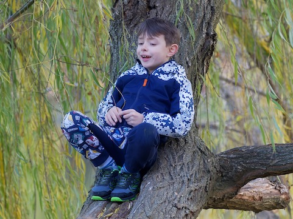

Adopting
a tree

Adopting a special tree as their own is a
great thing for children. I had one when I was young - a
hawthorn in a local park. For a couple of years I spent hours
sitting in or under it, collecting leaves, may blossom and
berries for the nature table at primary school, watching birds
come and go, and generally feeling a close connection with the
tree. I still remember it vividly sixty years later.
The tree needs to be accessible (perhaps in your garden, or in
a local public space) and not too large, so that children can
reach some leaves and seeds, and ideally climb onto a low
branch so that they can sit in it. A deciduous tree is best,
since it shows much more change through the year than an
evergreen. There are many things which can be done with a
tree. Here are some ideas, but you (or they) may think of
more.
- Record the development of the tree
through a full year, either in a Nature Journal or in a
dedicated tree diary. When do the first leaves appear?
Flowers or catkins? Fruits? When do the leaves start to
change colour in the autumn, and when do most of them
fall?
- Collect leaves, flowers and
fruits/seeds. These could be included in a nature table,
stuck into the diary if they are suitable, or used for
some artwork (see below).
- Identify the type of tree. An A-Z guide
to British trees from the Woodland Trust can be found here.
If it is not a common tree, then you may need to use
leaves, flowers and fruits to help identify it. An
identification guide from the Natural History Museum can
be found here.
- Estimate the size of your tree. How
tall is it, and how wide is its spread? The spread is easy
if you have a suitable tape measure (though it is worth
asking the child how they think they could best do it).
But what about the height? For an older child, this might
provide an opportunity to do some simple trigonometry. For
a younger one a good approach is to compare the tree with
an object of known height (a long stick with measured
length, for example) and to estimate how many times taller
the tree is. Discuss with them how this approach could be
made as accurate as possible.
- Use a magnifying glass to study the
leaf buds, bark, leaves and flowers in a bit of detail. If
there are fruits or seeds then cut them open (for obvious
reasons this is best done by an adult) and look at the
internal stucture. Draw what the magnifier reveals in the
diary.
- Take bark rubbings, press leaves or
flowers or make leaf prints.
These can also go into the diary.
- Observe creatures which live in, or
visit, the tree. What birds make use of it? What about
squirrels? Do bees or other insects visit the flowers? Can
you find other "minibeasts" living on the tree? One way to
do this is to place an old sheet under the tree and give a
branch a good shake to see what falls out. The Woodland
Trust has some useful guides here
which may help you to identify some of the creatures you
find.
- How old is your tree? This can be
roughly estimated from the circumference of the main
trunk. A rule of thumb is one year of age for every 2.5 cm
of girth. Of course this rule varies with the type of the
tree. A calculator which allows for this can be found here.
It is interesting to compare the age of your tree with
that of family members.
- If the tree is in your garden, there
are plenty of further things for which it can be used. For
example, hang a bird feeder on it, fix a nesting box or a
bug hotel to its trunk, build a den underneath it, or if
it has suitable strong branches hang a swing from one.